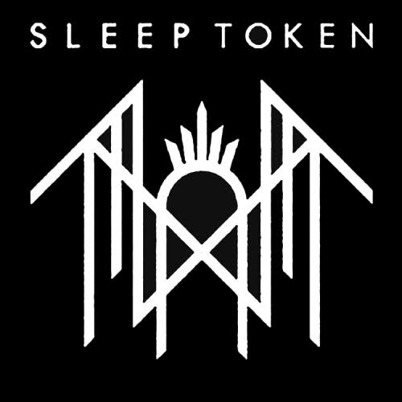

Sleep Token é uma banda britânica de rock, formada em 2016 em Londres, Inglaterra. O grupo é um coletivo mascarado anônimo liderado por um frontman apelidado de Vessel. Eles foram categorizados em muitos gêneros diferentes, incluindo metal alternativo, metalcore, post-rock/metal, metal progressivo e indie rock/pop. Depois de autopublicar seu extended play (EP) de estreia One em 2016, a banda assinou com a Basick Records e lançou uma sequência, Two, no ano seguinte. O grupo mais tarde assinou com a Spinefarm Records e lançou seu primeiro álbum completo Sundowning em 2019, que foi seguido em 2021 por This Place Will Become Your Tomb. Um terceiro álbum, Take Me Back to Eden, foi lançado em maio de 2023.
Anunciado em 28 de agosto de 2018, este foi o 11º show oficial da banda e ocorreu na St Pancras Old Church, em Londres, no dia 11 de outubro de 2018. Mas vídeos e relatos de fãs indicam apresentações em locais menores no Reino Unido entre 2017 e 2018, como no ULU Live em novembro de 2017.
Estreou em setembro de 2016 com o lançamento de seu primeiro single, "Thread the Needle". A faixa foi seguida em dezembro pelo EP de estreia da banda One, que apresentava duas canções adicionais mais arranjos alternativos de piano de todas as três faixas.[6] Em maio de 2017, foi anunciado que o Sleep Token havia assinado com o selo independente Basick Records e lançaria seu segundo EP Two em julho. Antes do lançamento do EP, o grupo lançou dois novos singles - "Calcutta" em maio e "Nazareth" e m junho.[8][9] Na estreia exclusiva de "Calcutta", o escritor da Metal Hammer, Luke Morton, descreveu a canção como "uma mistura estranha e única de metal técnico e paisagens sonoras indie expansivas". Na crítica para Two for Distorted Sound, Matt Corcoran também observou a combinação de elementos de vários gêneros, explicando que "Através dessas três faixas fascinantes, a banda cumpre totalmente sua promessa de mistura de gêneros, movendo-se entre uma atmosfera indie leve e uma atmosfera pesada e sombria de Meshuggah e cobrindo a maior parte do espectro intermediário.